Documento de diseño que integra los entregables E1 a E4: análisis del problema y requisitos, casos de uso y navegación, wireframes y mockups de alta fidelidad, arquitectura MVVM y modelo de datos con data classes de Kotlin. Incluye el enlace al prototipo navegable y la evidencia del sistema real.
Contenido
Los entregables E1 a E4 se integran en este documento. El E5 (prototipo) y el E6 (repositorio y presentación) se documentan en la sección 5 y se entregan por separado.
| Sigla | Significado | Sigla | Significado |
|---|---|---|---|
| RF | Requisito funcional | RNF | Requisito no funcional |
| HU | Historia de usuario | CU | Caso de uso |
| MVVM | Model–View–ViewModel | M3 | Material Design 3 |
| JWT | JSON Web Token | RBAC | Control de acceso por roles |
| TOTP | Código temporal de un solo uso | 2FA | Segundo factor de autenticación |
| SHA-256 | Función hash de integridad | HMAC | Código de autenticación con hash |
| ER | Modelo entidad-relación | API | Interfaz de programación |
| APK | Paquete instalable de Android | QR | Código de respuesta rápida |
Entregable E1 · Análisis
Esta sección define el problema, los usuarios y lo que la aplicación debe hacer. El objetivo no es describir la tecnología, sino dejar claro por qué existe D.O.S.Y.S, para quién se diseñó y qué debe poder hacer el paciente desde su teléfono.
| Nombre | D.O.S.Y.S — Expediente clínico digital y seguimiento de tratamientos |
| Tipo de solución | Aplicación Android nativa (Kotlin + Jetpack Compose) para el paciente, portal web para el personal y API REST con PostgreSQL. |
| Problema central | El paciente no puede consultar de forma oportuna su expediente, citas, estudios, recetas ni documentos; el hospital trabaja con papel y sin trazabilidad. |
| Usuarios | Paciente (actor principal de la app), médicos, recepción y laboratorio (portal). |
| Alcance de la app | 11 rutas de navegación y 3 estados/diálogos, agrupados en 5 flujos principales: acceso, inicio, expediente, check-in y seguridad. |
| Stack | Android API 26+, Kotlin, Jetpack Compose, Material 3, Navigation Compose, Retrofit, kotlinx.serialization, DataStore, ZXing, OSMDroid, BiometricPrompt; FastAPI, PostgreSQL, Docker, Nginx y Cloudflare. |
| Repositorio | github.com/ProtoFurOwO/Dosys |
| Prototipo | APK de depuración dosys-demo-vps.apk + prototipo navegable HTML autocontenido. |
En México, la información clínica de los pacientes permanece concentrada dentro de las instituciones de salud. El paciente rara vez puede consultar sus resultados de laboratorio, sus recetas, sus citas o su historial médico: esa información la tiene el hospital y, en la mayoría de los casos, no se le entrega de forma completa ni oportuna. Como consecuencia, el paciente desconoce su propio estado de salud y difícilmente puede dar seguimiento a un tratamiento.
Al mismo tiempo, dentro del hospital los procesos siguen apoyándose en el papel. La búsqueda del expediente antes de cada consulta retrasa la atención; los resultados de estudios se extravían o se repiten por no existir un registro digital unificado; y las solicitudes de estudios se trasladan manualmente entre el consultorio y el área encargada de realizarlos. A esto se suma que el manejo de información tan sensible —alergias, enfermedades crónicas, diagnósticos y tratamientos— ocurre, en muchos casos, sin un registro de quién la consulta o la modifica.
D.O.S.Y.S atiende esa doble necesidad: digitalizar la operación clínica y devolver al paciente el acceso a su propia información, con una superficie de solo lectura y con controles de seguridad verificables. La app no pretende sustituir el juicio médico ni el expediente institucional: es la ventana del paciente al expediente que el hospital ya produce.
Se definieron dos perfiles de paciente con necesidades distintas y un perfil secundario del personal clínico. Los tres influyen en decisiones de diseño: claridad para quien tiene poca familiaridad digital, rapidez para quien ya vive en el teléfono y confianza para quien toma decisiones clínicas.
Contexto. Usa WhatsApp y Facebook, pero desconfía de las apps bancarias. Va a consulta cada mes y guarda sus recetas en papel.
Necesita. Ver su próxima cita, sus medicamentos y sus resultados sin depender de una llamada; letras grandes, botones claros y mensajes en español.
Le frustra. Hacer fila para preguntar algo que debería estar en su teléfono y no entender los términos técnicos.
Contexto. Vive con el teléfono; usa apps bancarias, QR y autenticadores. Le molesta cargar papeles o volver al hospital por un resultado.
Necesita. Check-in rápido con la cámara, PDFs descargables, 2FA y una sesión que no le pida la contraseña cada vez.
Le frustra. Las filas, los portales que no funcionan en el celular y tener que llamar para confirmar una cita.
Contexto. Atiende consulta general, ordena estudios y emite recetas. Necesita ver el historial completo antes de decidir.
Necesita. Abrir el expediente en segundos, saber quién ya llegó, ordenar estudios y dejar la próxima cita sin empalmes.
Le frustra. Buscar carpetas, repetir estudios por extravío y no tener un registro de lo que se consultó.
Recepción. Agenda citas, muestra el QR y confirma la llegada; ve la sala de espera por consultorio.
Laboratorio. Recibe órdenes, captura resultados y genera el PDF con huella SHA-256.
Administración. Gestiona usuarios, roles, permisos y consulta la bitácora de auditoría.
Cada requisito describe una capacidad observable desde la app. La columna Pantalla conecta el requisito con el mapa de navegación de la sección 2 y con los mockups de la sección 3.
| ID | Requisito funcional | Prioridad | Pantalla / evidencia |
|---|---|---|---|
| RF-01 | Permitir el acceso con usuario o CURP y contraseña, mostrando un error genérico si las credenciales no coinciden. | Alta | Login |
| RF-02 | Solicitar un código TOTP de 6 dígitos cuando la cuenta tiene el segundo factor activo, con opción de código de recuperación. | Alta | Login · 2FA |
| RF-03 | Permitir la recuperación de contraseña mediante un enlace de un solo uso enviado al correo registrado. | Media | Login · diálogo |
| RF-04 | Mostrar en el inicio la próxima cita, el tratamiento activo y los accesos rápidos a la información del paciente. | Alta | Inicio |
| RF-05 | Mostrar el expediente del paciente (datos generales, alergias y consultas) después de validar su identidad con huella o bloqueo del teléfono. | Alta | Mi expediente |
| RF-06 | Listar las citas con especialidad, médico, fecha, lugar y estado (agendada, confirmada, atendida, cancelada). | Alta | Citas |
| RF-07 | Mostrar un QR personal del paciente con vigencia de 3 minutos y un código de respaldo. | Media | Mi QR |
| RF-08 | Escanear con la cámara el QR de la cita que muestra recepción y confirmar la llegada al hospital. | Alta | Check-in |
| RF-09 | Mostrar la ubicación del hospital en un mapa, la ubicación del paciente y la distancia en metros, usando GPS y OpenStreetMap. | Media | Check-in · mapa |
| RF-10 | Listar los estudios solicitados con su estado (solicitado, en proceso, listo), abrir el detalle y descargar el resultado en PDF. | Alta | Estudios · detalle |
| RF-11 | Listar las recetas con medicamento, dosis, frecuencia y duración, y permitir descargar la receta en PDF. | Alta | Recetas |
| RF-12 | Listar los documentos del expediente con su categoría, fecha y huella SHA-256, y permitir abrirlos o descargarlos. | Alta | Documentos |
| RF-13 | Permitir activar/desactivar el segundo factor, cambiar la contraseña y cerrar la sesión desde “Mi seguridad”. | Alta | Mi seguridad |
| ID | Requisito no funcional | Criterio verificable |
|---|---|---|
| RNF-01 | Seguridad de sesión. El acceso usa JWT de 30 minutos y refresh de 7 días con rotación; las contraseñas se guardan con Argon2. | El token caducado devuelve 401; el refresh se revoca al cerrar sesión. |
| RNF-02 | Privacidad y solo lectura. El paciente solo puede leer su propia información; las escrituras se limitan a login, check-in y seguridad de la cuenta. | Un paciente no puede consultar el expediente de otro (403). |
| RNF-03 | Usabilidad y accesibilidad. Material Design 3, textos en español, objetivos táctiles de al menos 48 dp y contraste mínimo AA. | Verde #13653F sobre blanco: 7.09:1; gris #5B6560: 6.04:1. |
| RNF-04 | Compatibilidad. Android 8.0 (API 26) o superior, orientación vertical y tamaño de pantalla de teléfono. | La app instala y navega en API 26+ sin cambios de layout. |
| RNF-05 | Rendimiento percibido. Las pantallas muestran indicadores de carga y no bloquean el hilo principal durante las llamadas de red. | Estado de carga visible; la navegación sigue respondiendo. |
| RNF-06 | Disponibilidad y errores. Si la API no responde, la app muestra un mensaje claro y no pierde la sesión; el check-in es idempotente. | Repetir el check-in no duplica la llegada; el error se muestra en pantalla. |
| RNF-07 | Mantenibilidad y trazabilidad. Código organizado por capas (ui, data, core), nombres claros, Git y bitácora de auditoría en el servidor. | El proyecto compila; cada acceso sensible queda en audit_log. |
Las historias se escribieron con el formato Como… quiero… para… y criterios de aceptación Dado / Cuando / Entonces. Cada una se puede probar sin ambigüedad y se relaciona con un requisito.
Como paciente, quiero entrar con mi usuario o CURP y mi contraseña para consultar mi información clínica.
Dado que tengo una cuenta activa, cuando escribo credenciales correctas y toco “Iniciar sesión”, entonces llego al inicio y veo mi nombre. Dado que escribo una contraseña incorrecta, cuando intento entrar, entonces veo un mensaje genérico y puedo reintentar.
Como paciente, quiero solicitar un enlace de recuperación para volver a entrar si olvidé mi contraseña.
Dado que toco “¿Olvidaste tu contraseña?”, cuando escribo mi usuario o correo, entonces veo un mensaje neutro (“si la cuenta existe, se enviará un enlace”). Dado un enlace vencido o ya usado, cuando lo abro, entonces el sistema lo rechaza.
Como paciente, quiero ver mi próxima cita en el inicio para saber cuándo y con quién tengo consulta.
Dado que tengo una cita agendada, cuando abro el inicio, entonces veo especialidad, médico, fecha, hora y un acceso a todas mis citas. Dado que no tengo citas, entonces veo “No tienes citas próximas”.
Como paciente, quiero que mi expediente se abra con mi huella o el bloqueo del teléfono para que nadie más lo vea si pierdo el dispositivo.
Dado que toco “Expediente”, cuando el sistema solicita biometría, entonces solo después de validarla veo mis datos y consultas. Dado un teléfono sin huella configurada, entonces la app avisa y permite continuar en modo demostración.
Como paciente, quiero escanear el QR que muestra recepción para confirmar que ya llegué sin hacer fila.
Dado que recepción muestra el QR de mi cita, cuando abro la cámara y lo escaneo, entonces veo “Llegada confirmada” con especialidad, consultorio y hora. Dado un código inválido, entonces veo un error claro y puedo reintentar.
Como paciente, quiero escribir el código de respaldo para completar el check-in cuando no puedo escanear.
Dado que la cámara no funciona, cuando escribo el código de la cita, entonces el sistema valida y confirma la llegada. Dado un código ya usado, entonces el check-in es idempotente y no duplica la llegada.
Como paciente, quiero ver mis estudios con su estado y abrir el PDF para llevar mis resultados a otra consulta.
Dado que tengo un estudio “Listo”, cuando abro el detalle, entonces veo el resultado y puedo descargarlo. Dado un estudio “Solicitado” o “En proceso”, entonces veo el estado sin un PDF disponible.
Como paciente, quiero ver mis medicamentos, dosis y frecuencia para no confundir mi tratamiento.
Dado que el médico emitió una receta, cuando abro “Recetas”, entonces veo cada medicamento con dosis, frecuencia y duración. Dado que la receta tiene PDF, entonces puedo descargarlo.
Como paciente, quiero ver mis documentos con su huella SHA-256 para confiar en que no fueron alterados.
Dado que el expediente tiene documentos, cuando abro “Documentos”, entonces veo título, categoría, fecha y huella. Dado que toco “Abrir”, entonces se descarga y se abre con la app disponible en el teléfono.
Como paciente, quiero activar 2FA con Google o Microsoft Authenticator para proteger mi cuenta aunque alguien conozca mi contraseña.
Dado que abro “Mi seguridad”, cuando activo el segundo factor y confirmo el código, entonces la app muestra los códigos de recuperación una sola vez. Dado que cierro sesión, cuando vuelvo a entrar, entonces se solicita el código TOTP.
Como paciente, quiero cambiar mi contraseña y cerrar sesión para controlar el acceso a mi cuenta.
Dado que escribo mi contraseña actual y una nueva de al menos 8 caracteres con letras y números, cuando confirmo, entonces se actualiza y se cierran las demás sesiones. Dado que toco “Cerrar sesión”, entonces vuelvo al login y el token se revoca.
Como paciente, quiero ver qué tan lejos estoy del hospital para calcular mi llegada.
Dado que concedo permiso de ubicación, cuando abro el check-in, entonces veo el mapa, el pin del hospital y la distancia en metros. Dado que niego el permiso, entonces veo una explicación y la app sigue funcionando sin GPS.
La matriz siguiente demuestra que cada requisito tiene al menos una historia de usuario y una pantalla donde se verifica. También sirve como lista de comprobación para la demo.
| Requisito | Historia(s) | Pantalla / evidencia | Cómo se prueba |
|---|---|---|---|
| RF-01 | HU-01 | Login | Credenciales correctas e incorrectas |
| RF-02 | HU-10 | Login · 2FA | Código TOTP y código de recuperación |
| RF-03 | HU-02 | Login · diálogo | Enlace de un solo uso |
| RF-04 | HU-03 | Inicio | Próxima cita y tratamiento |
| RF-05 | HU-04 | Mi expediente | BiometricPrompt + historial |
| RF-06 | HU-03, HU-05 | Citas | Estados y datos de la cita |
| RF-07 | HU-05 | Mi QR | QR con vigencia y respaldo |
| RF-08 | HU-05, HU-06 | Check-in | Escaneo y código de respaldo |
| RF-09 | HU-12 | Check-in · mapa | Permiso concedido/negado |
| RF-10 | HU-07 | Estudios · detalle | Estado y PDF |
| RF-11 | HU-08 | Recetas | Medicamentos y PDF |
| RF-12 | HU-09 | Documentos | Huella SHA-256 y descarga |
| RF-13 | HU-10, HU-11 | Mi seguridad | 2FA, contraseña y logout |
Entregable E2 · Comportamiento
El comportamiento de la app se modela desde el punto de vista del paciente. Los casos de uso describen qué puede hacer y el mapa de navegación describe cómo llega a cada pantalla. Ambos se derivan de las historias de la sección 1.
| Actor | Tipo | Participación |
|---|---|---|
| Paciente | Principal | Inicia sesión, consulta su expediente, citas, estudios, recetas y documentos; hace check-in y gestiona su seguridad. |
| Recepción | Secundario | Agenda la cita y muestra el QR que el paciente escanea. No usa la app, pero participa en el caso de check-in. |
| App autenticadora | Secundario | Genera el código TOTP de 6 dígitos que el paciente escribe durante el segundo factor. |
| API / backend | Sistema | Valida identidad, permisos, códigos QR y estados; registra la bitácora. Es la frontera del sistema, no un actor humano. |
| ID | Caso de uso | Actor(es) | Relación | Pantalla |
|---|---|---|---|---|
| CU-01 | Iniciar sesión y verificar 2FA | Paciente · App autenticadora | «include» Verificar código TOTP | Login |
| CU-02 | Recuperar contraseña | Paciente | — | Login · diálogo |
| CU-03 | Consultar expediente clínico | Paciente | «include» Validar huella | Mi expediente |
| CU-04 | Ver citas y estados | Paciente | — | Citas |
| CU-05 | Hacer check-in con QR | Paciente · Recepción | «include» Escanear QR; «extend» Código de respaldo | Check-in |
| CU-06 | Consultar estudios y resultados | Paciente | «include» Descargar PDF firmado | Estudios · detalle |
| CU-07 | Ver recetas y tratamiento | Paciente | «include» Descargar PDF firmado | Recetas |
| CU-08 | Ver documentos del expediente | Paciente | «include» Descargar PDF firmado | Documentos |
| CU-09 | Mostrar mi QR | Paciente | — | Mi QR |
| CU-10 | Gestionar mi seguridad | Paciente | «include» Verificar código TOTP | Mi seguridad |
| CU-11 | Cerrar sesión | Paciente | — | Inicio · Login |
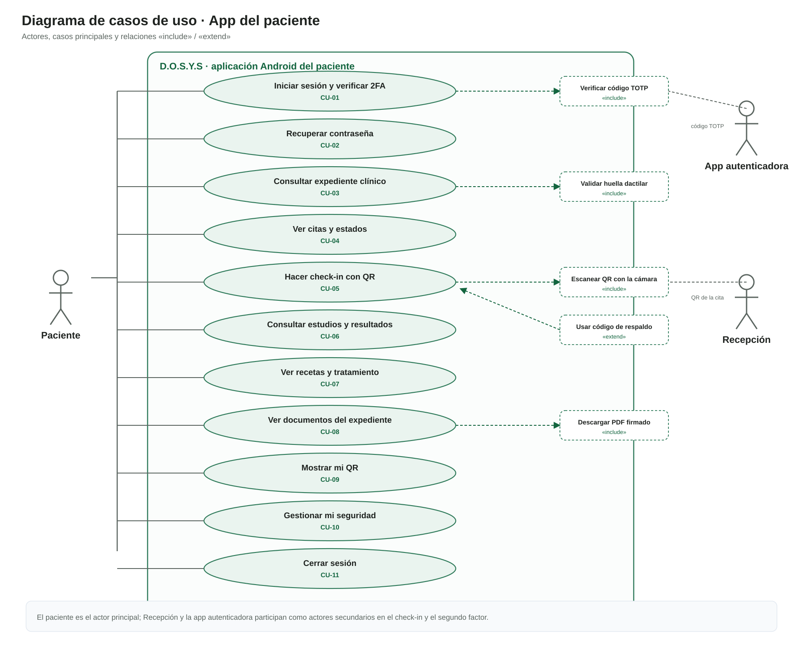
El diagrama se leyó de arriba hacia abajo: el paciente es el actor principal y tiene acceso a once casos. Los casos marcados con «include» siempre forman parte del caso base (por ejemplo, consultar el expediente incluye validar la huella). El caso «extend» solo ocurre cuando la cámara falla: el paciente usa el código de respaldo para completar el check-in.
Se detallan los cinco casos que concentran el valor de la app y que se demuestran en la presentación.
| Caso | Descripción, flujo y excepciones |
|---|---|
| CU-01 Iniciar sesión y verificar 2FA |
Precondición: el paciente tiene una cuenta activa. Flujo: escribe usuario/CURP y contraseña → la API valida → si la cuenta tiene 2FA, la app pide el código TOTP → al validarlo recibe los tokens y entra al inicio. Excepciones: credenciales incorrectas (mensaje genérico), cuenta bloqueada por intentos, código TOTP inválido o vencido. Postcondición: sesión iniciada y backstack limpio. |
| CU-03 Consultar expediente |
Precondición: sesión iniciada. Flujo: toca “Expediente” → la app solicita huella o bloqueo del teléfono → al validar, consulta el perfil y las consultas → muestra datos generales, alergias e historial. Excepciones: biometría cancelada o no configurada (aviso y modo demostración), error de red. Postcondición: el expediente queda visible solo en pantalla; no se escribe nada. |
| CU-05 Hacer check-in con QR |
Precondición: el paciente tiene una cita y recepción muestra su QR. Flujo: abre “Check-in” → “Abrir cámara” → ZXing lee el código → la app envía POST /patients/me/appointments/{id}/check-in → la API valida propiedad, código, estado y ventana → responde 200 → la app muestra especialidad, consultorio y hora. Excepciones: permiso de cámara denegado, código inválido, cita ya usada o fuera de ventana; se ofrece el código de respaldo. Postcondición: la llegada queda registrada y visible en la sala de espera del portal. |
| CU-06 Consultar estudios y resultados |
Precondición: el médico ordenó al menos un estudio. Flujo: abre “Estudios” → ve la lista con estado → toca un estudio “Listo” → ve el detalle y descarga el PDF firmado. Excepciones: estudio sin resultado, PDF no disponible, error de red. Postcondición: el paciente conserva una copia del resultado en su teléfono. |
| CU-10 Gestionar mi seguridad |
Precondición: sesión iniciada. Flujo: abre “Mi seguridad” → activa 2FA (escanea el QR en su autenticador y confirma el código) o cambia su contraseña → la API valida y actualiza → la app muestra confirmación. Excepciones: código inválido, contraseña actual incorrecta, contraseña nueva débil. Postcondición: la cuenta queda protegida y las demás sesiones se cierran si se cambió la contraseña. |
| Caso | Historias | Requisitos | Evidencia en la demo |
|---|---|---|---|
| CU-01 Iniciar sesión | HU-01, HU-10 | RF-01, RF-02 | Login con contraseña y código TOTP. |
| CU-03 Consultar expediente | HU-04 | RF-05 | BiometricPrompt + datos e historial. |
| CU-05 Check-in | HU-05, HU-06 | RF-08, RF-09 | QR del portal + confirmación en la app. |
| CU-06 Estudios | HU-07 | RF-10 | Lista por estado + PDF con hash. |
| CU-10 Seguridad | HU-10, HU-11 | RF-13 | 2FA, cambio de contraseña y logout. |
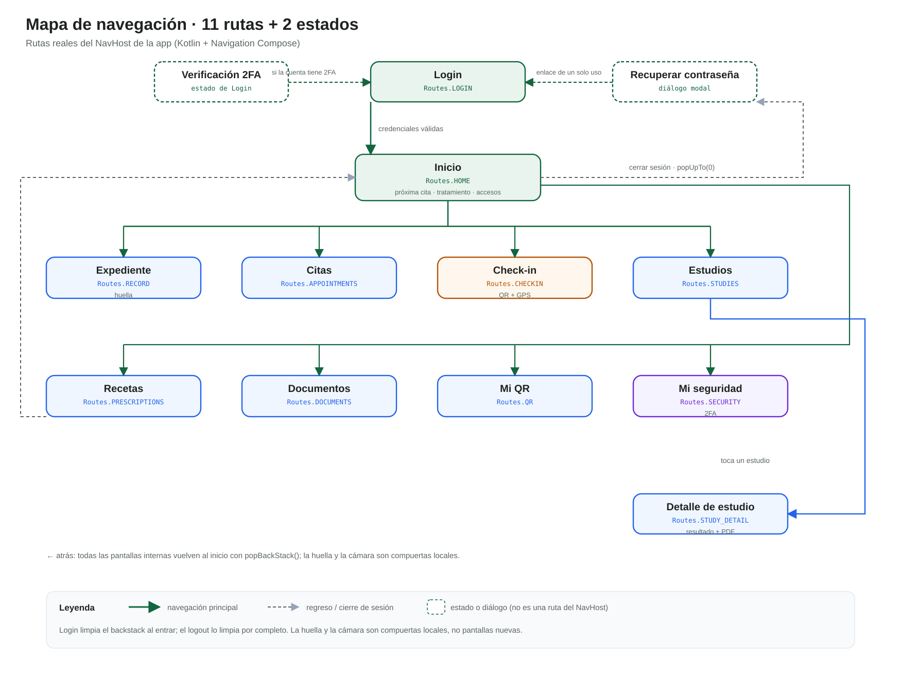
El grafo es un hub: el inicio concentra los accesos y cada pantalla interna regresa con popBackStack(). Al iniciar sesión se limpia el backstack para que “atrás” no vuelva al login; al cerrar sesión se limpia por completo con popUpTo(0). La huella y la cámara son compuertas locales, no pantallas nuevas del NavHost.
| Ruta / pantalla | Propósito | Entra desde | Sale hacia |
|---|---|---|---|
| Login Routes.LOGIN | Autenticación con usuario/CURP y contraseña; diálogo de recuperación; paso 2FA. | Inicio de la app; logout | Inicio; 2FA; diálogo de recuperación |
| Inicio Routes.HOME | Próxima cita, tratamiento activo y accesos rápidos. | Login | Expediente, Citas, Check-in, Estudios, Recetas, Mi QR, Seguridad, Documentos; logout |
| Mi expediente Routes.RECORD | Datos del paciente, alergias e historial de consultas; protegido por huella. | Inicio | Inicio (atrás) |
| Citas Routes.APPOINTMENTS | Lista de citas y estados; acceso al check-in. | Inicio | Check-in; Inicio |
| Check-in Routes.CHECKIN | Cámara QR, código de respaldo, mapa GPS y confirmación de llegada. | Inicio; Citas | Inicio; mapa |
| Estudios Routes.STUDIES | Lista de estudios con estado (solicitado, en proceso, listo). | Inicio | Detalle de estudio; Inicio |
| Detalle de estudio Routes.STUDY_DETAIL | Resultado del estudio y descarga del PDF. | Estudios | Estudios |
| Recetas Routes.PRESCRIPTIONS | Medicamentos, dosis, frecuencia y PDF de la receta. | Inicio | Inicio |
| Documentos Routes.DOCUMENTS | Documentos del expediente con categoría, fecha y SHA-256. | Inicio | Inicio |
| Mi QR Routes.QR | QR personal con vigencia y código de respaldo. | Inicio | Inicio |
| Mi seguridad Routes.SECURITY | Activar/desactivar 2FA, cambiar contraseña y ver códigos de recuperación. | Inicio | Inicio |
| Recuperar contraseña diálogo modal | Solicitar un enlace de un solo uso. | Login | Login |
| Verificación 2FA estado de Login | Escribir el código TOTP o un código de recuperación. | Login | Inicio; Login |
| Bloqueo por huella BiometricPrompt | Compuerta local antes de mostrar el expediente. | Mi expediente | Mi expediente |
Total: 11 rutas declaradas en Routes.kt + 3 estados/diálogos = 14 nodos en el mapa. La tabla coincide con el código real de DosysNavHost.kt.
Entregable E3 · Interfaz
El diseño visual parte de un sistema sencillo: fondo claro, verde institucional, tarjetas con bordes suaves y un solo botón primario por pantalla. La app usa Material Design 3 y está pensada para leerse de un vistazo, incluso con poca familiaridad digital.
El sistema se construyó sobre los componentes estándar de Material 3 para que la app se sienta nativa en Android y para que el prototipo sea consistente con las guías de la materia. No se usan librerías de diseño externas: todo se implementa con androidx.compose.material3.
| Token | Valor | Uso |
|---|---|---|
| Primario | #13653F | Botones, iconos activos, títulos y barra superior. |
| Primario claro | #EAF4EF | Fondo de tarjetas de estado, contenedores y top bar. |
| Superficie | #FFFFFF | Fondo de pantalla y tarjetas principales. |
| Texto | #1F2320 | Títulos y texto principal (contraste 15.9:1 sobre blanco). |
| Texto secundario | #5B6560 | Descripciones y ayudas (contraste 6.04:1). |
| Error | #B3261E | Mensajes de validación y estados de error (6.54:1). |
La app usa la tipografía por defecto de Material 3 (Roboto) y la escala estándar: display para el logo de acceso, titleLarge para títulos de pantalla, bodyMedium para texto clínico y labelLarge para botones. El documento usa Arial 11 pt por el lineamiento de entrega.
Rejilla de 8 dp; 16 dp de margen lateral; 12 dp entre tarjetas; radios de 12–16 dp. Los botones miden 52 dp de alto y las tarjetas tienen áreas táctiles completas, no solo el texto.
| Componente M3 | Dónde se usa | Regla de diseño |
|---|---|---|
| TopAppBar | Inicio, expediente, check-in, seguridad y demás pantallas internas. | Fondo primaryContainer, título grande y botón de regreso con descripción accesible. |
| Card | Próxima cita, tratamiento, datos del paciente, estudios, recetas. | Una idea por tarjeta; icono + título + contenido + acción. Sin sombras fuertes. |
| Button | Iniciar sesión, abrir cámara, activar 2FA, cambiar contraseña. | Un solo botón primario por pantalla; acciones secundarias en TextButton u OutlinedButton. |
| OutlinedTextField | Credenciales, código de respaldo, contraseñas. | Etiqueta visible, icono inicial, mensaje de ayuda y error debajo del campo. |
| AlertDialog | Recuperar contraseña y confirmaciones. | Un campo por diálogo; acción principal a la derecha y “Cancelar” a la izquierda. |
| LinearProgressIndicator | Tratamiento activo. | Muestra el avance de tomas sin convertirlo en una tarea de vigilancia. |
| StatusChip / texto | Estados de cita y estudio. | El estado siempre se escribe con texto, no solo con color. |
Los wireframes muestran la estructura antes del color: jerarquía, bloques, campos y acciones. Se dibujaron en escala de grises para discutir el flujo sin distraerse con la estética. Los números negros remiten a la leyenda de cada pantalla.
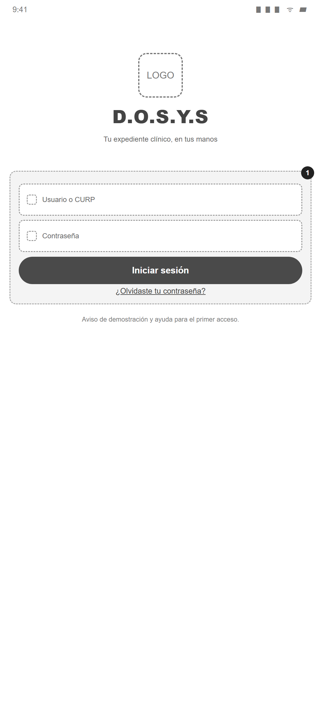
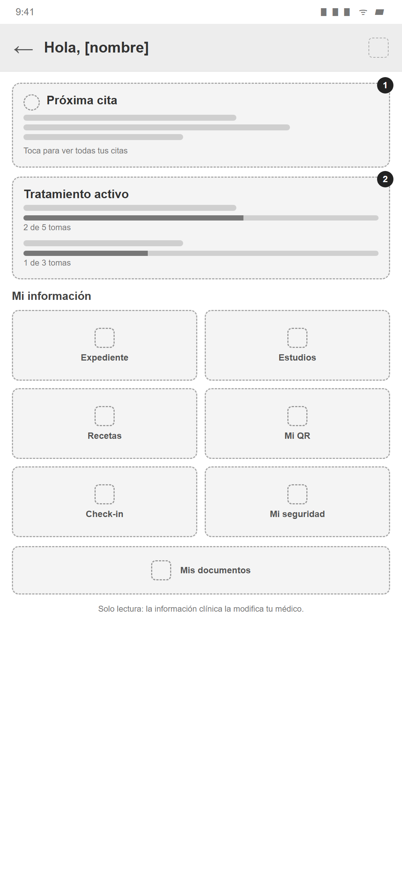
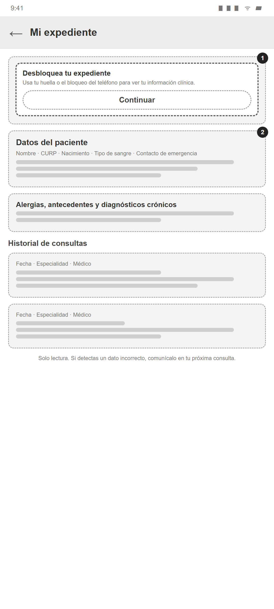
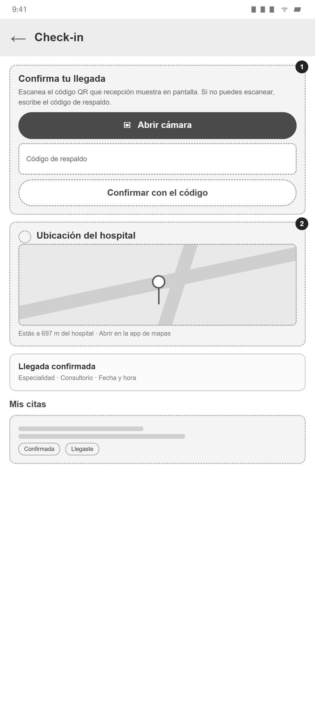
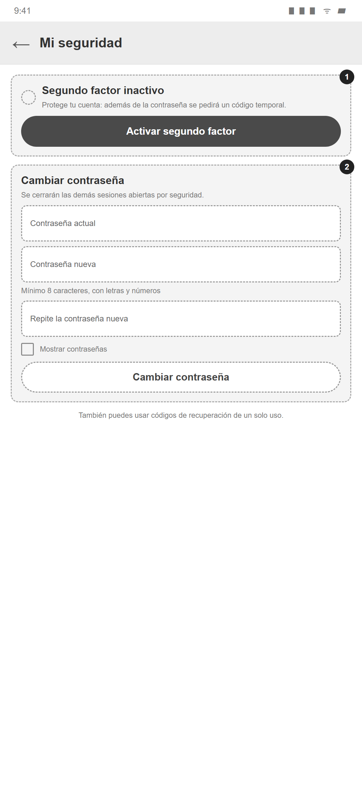
Barra superior con regreso y título. Tarjetas con icono, título y contenido. Un botón primario por pantalla. Campos con etiqueta y ayuda. Avisos en texto, no solo color.
Patrón de flujo: inicio → tarjeta → detalle → regreso. Ninguna pantalla interna depende de un menú lateral; todo se alcanza desde el inicio o desde la tarjeta relacionada.
El paciente usa la app en ráfagas cortas (ver una cita, un resultado, hacer check-in). Una barra inferior con 5 destinos ocultaría funciones y competiría con los accesos grandes. La rejilla de tarjetas es más legible y permite crecer sin reentrenar al usuario.
Los mockups de alta fidelidad se generaron a partir del prototipo ejecutable, no de una recreación. Por eso muestran el estado real de la app: tipografía, colores, componentes y datos de demostración. Cada página incluye la pantalla principal y un estado secundario que completa la función.
Mockup 1 de 5
Acceso con usuario o CURP, contraseña y recuperación de cuenta.
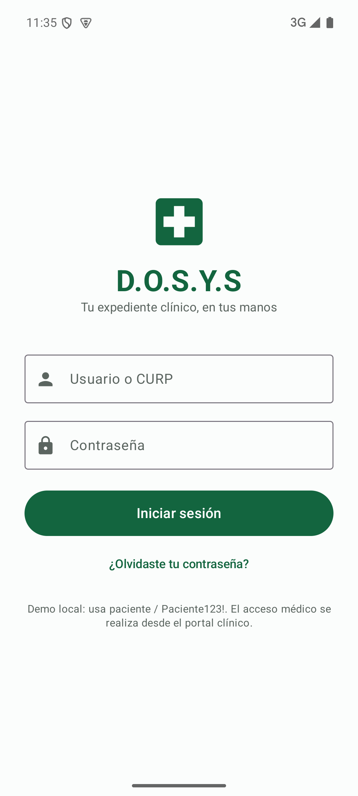
El paciente escribe su usuario o CURP y su contraseña. Si la cuenta tiene 2FA, la app pasa al paso de código TOTP. El enlace “¿Olvidaste tu contraseña?” abre el diálogo de recuperación.
Cargando (spinner dentro del botón), credenciales incorrectas (error genérico), 2FA requerido (pantalla de código) y recuperación (diálogo modal).
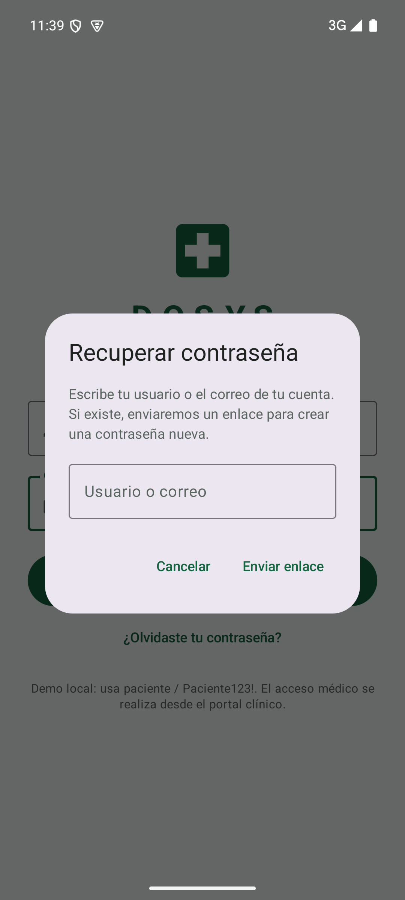
Mockup 2 de 5
La próxima cita, el tratamiento activo y todos los accesos en una sola pantalla.
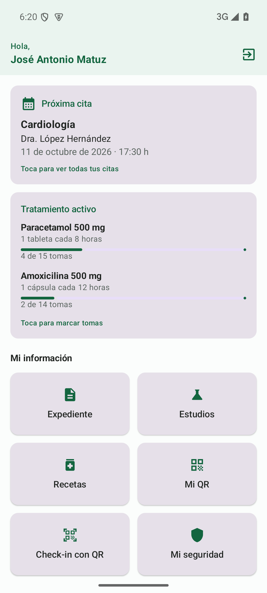
Al entrar, el paciente ve su nombre, la próxima cita con especialidad/médico/fecha y el tratamiento activo con el avance de tomas. Debajo, una rejilla de seis accesos y una tarjeta de documentos.
La cita ocupa el primer lugar porque es la acción más urgente; el tratamiento segundo; los accesos después. El contenido es desplazable y la tarjeta de documentos queda al final.
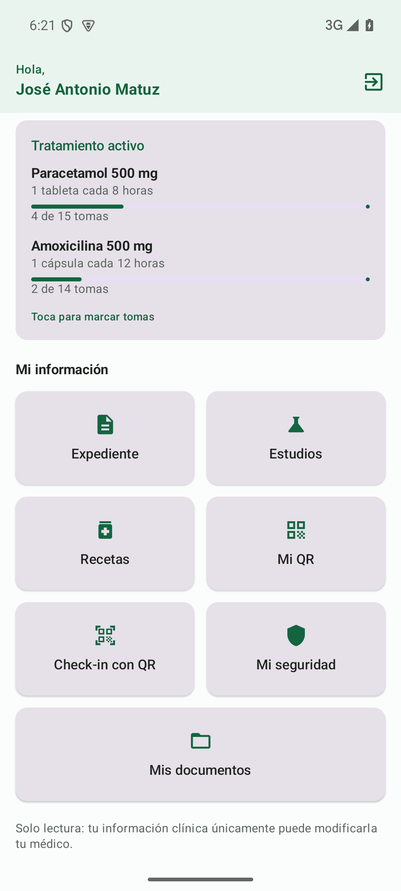
Mockup 3 de 5
Datos del paciente e historial clínico, protegidos por huella.
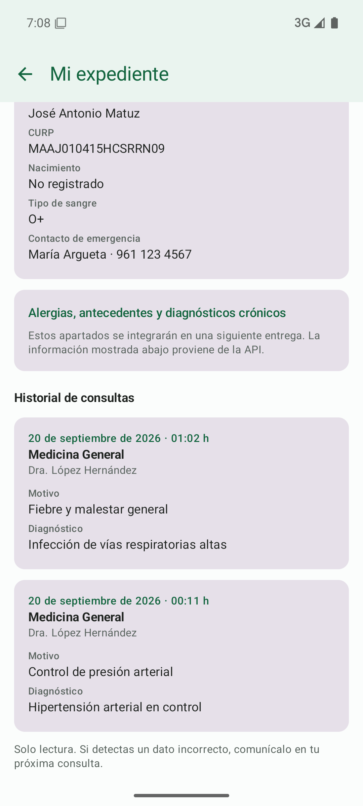
Muestra nombre, CURP, nacimiento, tipo de sangre, contacto de emergencia, alergias/antecedentes y el historial de consultas con motivo y diagnóstico. La app solo lee; el médico escribe desde el portal.
Antes de mostrar el contenido se ejecuta BiometricPrompt. Si el teléfono no tiene huella configurada, la app avisa y permite continuar en modo demostración; esa diferencia se declara en la sección 5.
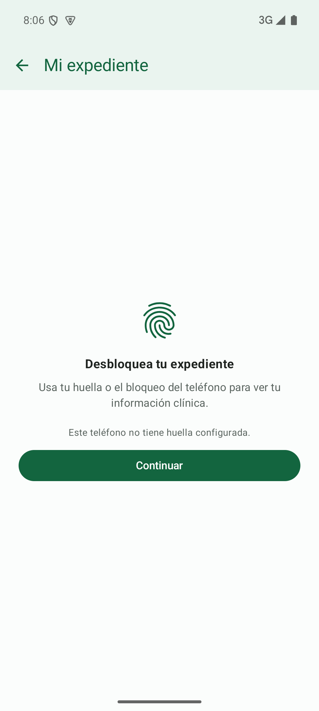
Mockup 4 de 5
Cámara, código de respaldo, GPS y confirmación de llegada.
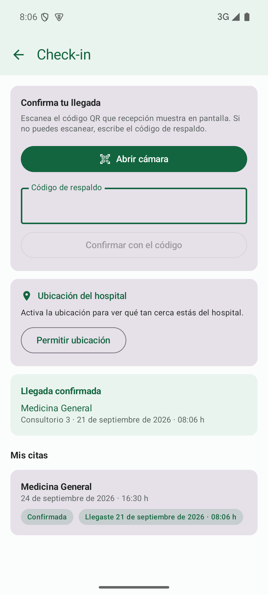
El paciente abre la cámara y escanea el QR que recepción muestra en el portal. La app envía el código a la API y recibe la confirmación con especialidad, consultorio y hora. Si la cámara falla, escribe el código de respaldo. La tarjeta inferior muestra sus citas.
Cámara con ZXing (escáner en orientación vertical), GPS con permiso explícito y mapa OpenStreetMap sin API key. Si el permiso se niega, la pantalla explica y el check-in sigue disponible por código.
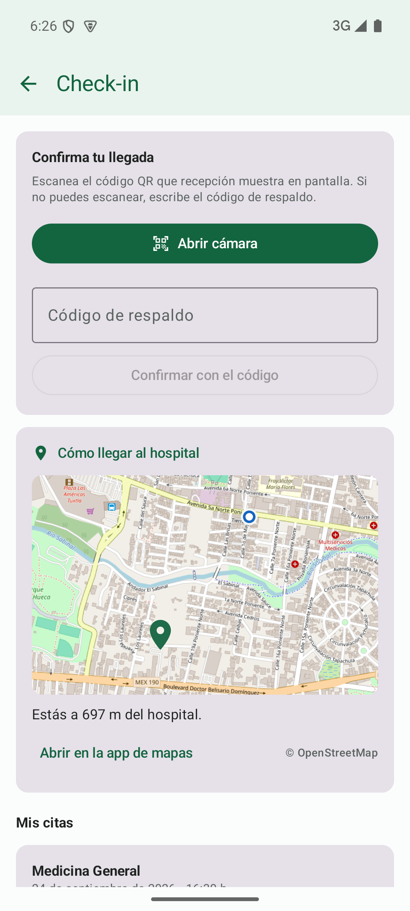
Mockup 5 de 5
Segundo factor, cambio de contraseña y códigos de recuperación.
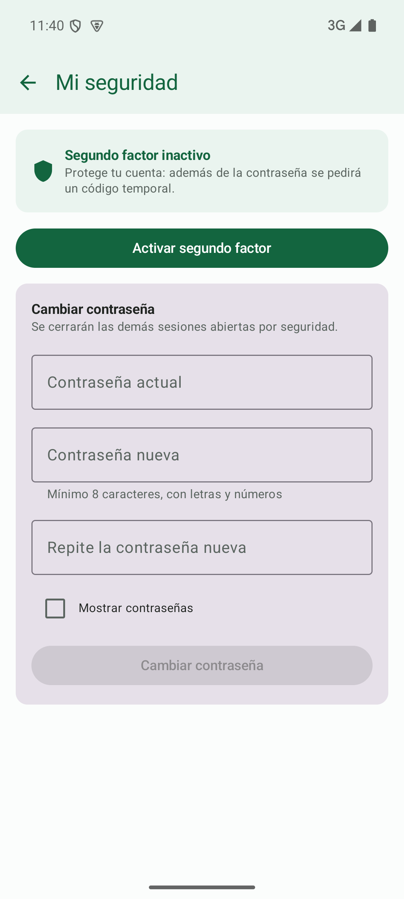
El paciente activa el segundo factor con Google o Microsoft Authenticator, cambia su contraseña y consulta los códigos de recuperación. Al cambiar la contraseña se cierran las demás sesiones abiertas.
2FA inactivo/activo, códigos de recuperación (se muestran una sola vez), contraseña débil, contraseña actual incorrecta y confirmación de cambio.
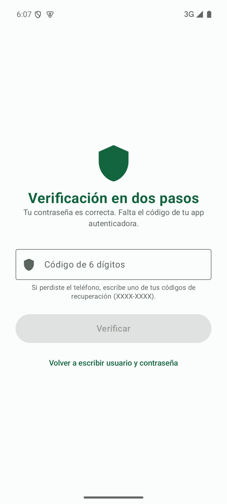
Los mockups del PDF son estáticos por naturaleza. Para que el profesor pueda tocar la app, se construyó un prototipo HTML autocontenido con las mismas capturas del sistema real y zonas interactivas sobre los controles. No requiere instalar nada ni conectar el backend: se abre en cualquier navegador.
Haz clic en los elementos resaltados del teléfono o usa la barra lateral para saltar entre pantallas.
También está en el repositorio: design/prototipo/Prototipo_DOSYS.html. Si el enlace directo no abre, descarga el archivo y ábrelo con doble clic.
Los mockups no se dibujaron “a mano” a partir de una idea: se capturaron del prototipo que ya compila y se ejecuta. Esa decisión elimina la deriva entre diseño y código y convierte la sección 5 en una verificación, no en una promesa.
| Pantalla | Archivo Kotlin | Función que se ve en el mockup | Diferencia / nota |
|---|---|---|---|
| Login | ui/login/LoginScreen.kt | Credenciales, recuperación y paso 2FA. | El aviso “Demo local” se retira en producción. |
| Inicio | ui/home/HomeScreen.kt | Próxima cita, tratamiento, 7 accesos y cierre de sesión. | El contenido es desplazable; la captura muestra el primer viewport. |
| Mi expediente | ui/record/RecordScreen.kt | Perfil, alergias e historial; biometría antes de mostrar. | El emulador no tiene huella; se muestra el aviso y “Continuar”. |
| Check-in | ui/checkin/CheckInScreen.kt | Cámara, código de respaldo, mapa, confirmación y citas. | La cámara no se captura en el PDF; el estado del mapa sí. |
| Mi seguridad | ui/security/SecurityScreen.kt | 2FA, contraseña y códigos de recuperación. | La captura muestra 2FA inactivo; el paso 2FA va como estado secundario. |
| Criterio | Qué se revisó | Cumple |
|---|---|---|
| Jerarquía | Un título por pantalla; la acción principal se distingue sin competir con el contenido. | Sí |
| Consistencia | Mismos radios, colores, tipografía y espaciado en las 5 pantallas y sus estados. | Sí |
| Contraste | Verde #13653F sobre blanco (7.09:1), gris #5B6560 (6.04:1) y error #B3261E (6.54:1). | Sí |
| Tacto | Botones de 52 dp y tarjetas completas clicables; campos con altura suficiente. | Sí |
| Accesibilidad | Estados con texto, iconos con descripción y soporte de escala de fuente. | Sí |
| Estados | Carga, error, vacío, éxito y permisos denegados documentados. | Sí |
Entregable E4 · Arquitectura
La app sigue el patrón MVVM con un flujo unidireccional de datos: la interfaz observa un estado inmutable, el ViewModel lo produce y el repositorio decide de dónde sale. La misma arquitectura se conecta con una API REST y con un modelo de datos de solo lectura representado por data classes de Kotlin.
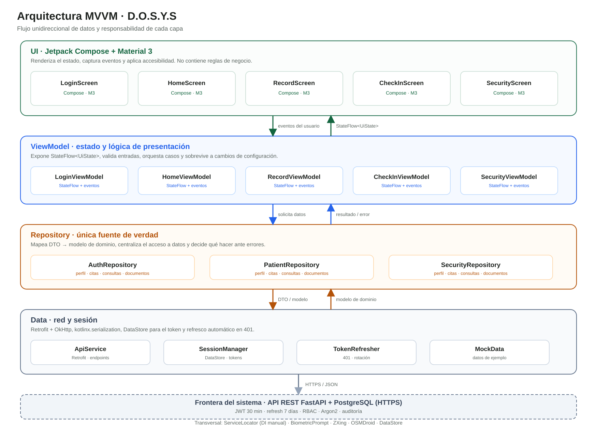
| Capa | Componentes reales | Responsabilidad | Regla de diseño |
|---|---|---|---|
| UI | LoginScreen, HomeScreen, RecordScreen, CheckInScreen, SecurityScreen, ScreenScaffold, theme/ | Renderiza el estado, captura eventos, aplica Material 3 y accesibilidad. No valida reglas de negocio. | Un composable por pantalla; componentes reutilizables. |
| ViewModel | LoginViewModel, HomeViewModel, RecordViewModel, CheckInViewModel, SecurityViewModel | Expone StateFlow<UiState>, valida entradas, lanza corrutinas y sobrevive a cambios de configuración. | Sin referencias a Context ni a vistas. |
| Repository | AuthRepository, PatientRepository, SecurityRepository | Única fuente de verdad; mapea DTO → modelo de dominio, centraliza errores y decide qué datos expone. | La UI nunca llama a Retrofit directamente. |
| Data | ApiService, NetworkModule, TokenRefresher, SessionManager, MockData | HTTP con Retrofit/OkHttp, serialización, almacenamiento del token en DataStore y refresco automático en 401. | El token no se incluye en respaldos. |
| Core | ServiceLocator, SessionManager, BiometricGate, ZXing, OSMDroid | DI manual, sesión, biometría, cámara y mapa. Son dependencias transversales, no capas de negocio. | Inyección explícita, sin frameworks pesados. |
El usuario toca un botón → la UI emite un evento → el ViewModel actualiza su estado o llama al repositorio → el repositorio consulta la API → el ViewModel recibe el resultado y publica un nuevo UiState → Compose recompone solo lo que cambió. Este ciclo se repite en todas las pantallas y explica por qué la app puede mostrar estados de carga, error y éxito sin lógica duplicada.
// Ejemplo real de la capa de presentación
class HomeViewModel(
private val repository: PatientRepository = ServiceLocator.patientRepository,
) : ViewModel() {
private val _state = MutableStateFlow(HomeUiState())
val state: StateFlow<HomeUiState> = _state.asStateFlow()
fun load() = viewModelScope.launch {
_state.update { it.copy(isLoading = true, error = null) }
runCatching { repository.nextAppointment() }
.onSuccess { appointment ->
_state.update { it.copy(isLoading = false, nextAppointment = appointment) }
}
.onFailure { error ->
_state.update { it.copy(isLoading = false, error = error.message) }
}
}
}
La arquitectura de datos muestra con qué software está hecho el sistema y por dónde viajan los datos. Se organiza en cuatro zonas —clientes, borde, servidor y datos— más una banda de seguridad transversal. Los logos son de Simple Icons (CC0) y de sus respectivas marcas.
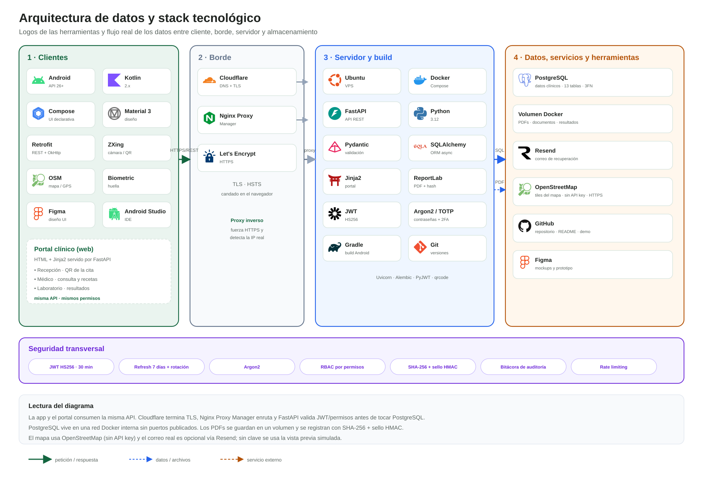
| Zona | Qué contiene | Protocolo / frontera |
|---|---|---|
| Clientes | App Android (Kotlin, Compose, M3, Retrofit, ZXing, OSMDroid, Biometric) y portal web (HTML + Jinja2). | HTTPS · REST/JSON · cookies HttpOnly en el portal. |
| Borde | Cloudflare (DNS/TLS), Nginx Proxy Manager y Let's Encrypt. | TLS 1.2/1.3, HSTS, proxy inverso y límites de tamaño. |
| Servidor | Ubuntu VPS, Docker Compose, FastAPI/Uvicorn, Pydantic, SQLAlchemy/Alembic, Jinja2, ReportLab, PyJWT, Argon2, PyOTP. | API REST, validación, generación de PDF y correo. |
| Datos | PostgreSQL (13 tablas, 3FN), volumen Docker para PDFs, Resend para correo y OpenStreetMap para tiles. | SQL asyncpg por red interna; archivos con SHA-256 + HMAC. |
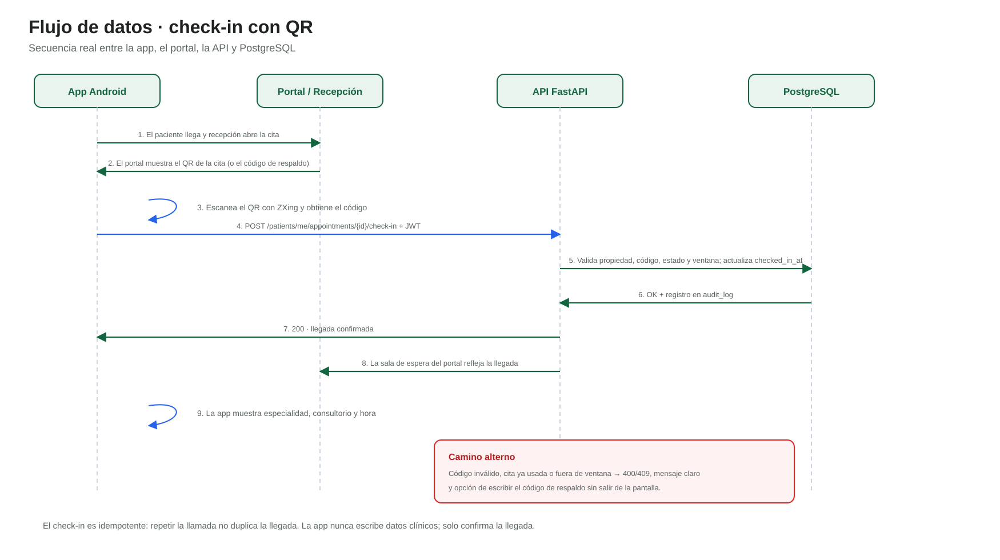
El check-in es el mejor ejemplo de la arquitectura porque cruza las cuatro capas: cámara (UI), ViewModel, repositorio, Retrofit, API, PostgreSQL y portal. La operación es idempotente: si el paciente repite la llamada, la llegada no se duplica. Además, la app nunca escribe datos clínicos; solo confirma la llegada.
| Paso | Responsable | Qué ocurre | Evidencia / regla |
|---|---|---|---|
| 1 | Recepción (portal) | Abre la cita y muestra el QR con su código de respaldo. | Cada cita genera un código único. |
| 2 | App (UI) | El paciente toca “Abrir cámara” y escanea el QR. | ZXing en orientación vertical. |
| 3 | App (ViewModel) | Envía el código al repositorio y muestra estado de carga. | No bloquea el hilo principal. |
| 4 | API (FastAPI) | Valida JWT, propiedad de la cita, código, estado y ventana. | 401/403/400/409 según el caso. |
| 5 | PostgreSQL | Actualiza checked_in_at y registra la auditoría. | Operación idempotente. |
| 6 | API → App | Responde 200 con especialidad, consultorio y hora. | La app muestra “Llegada confirmada”. |
| 7 | Portal | La sala de espera refleja la llegada del paciente. | El médico abre la consulta precargada. |
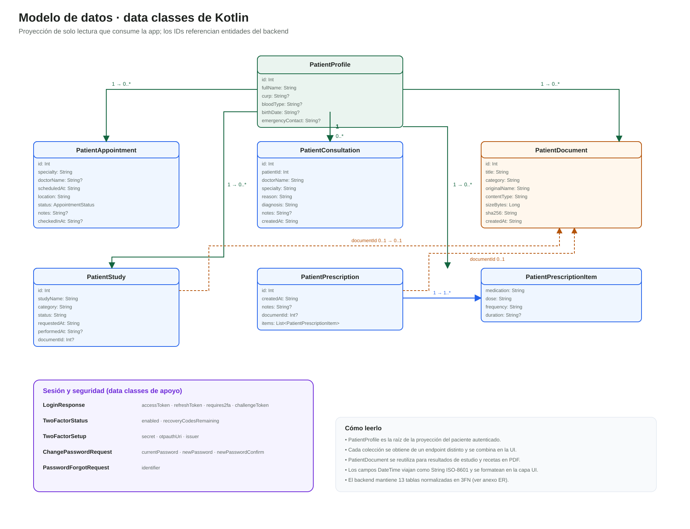
El modelo de la app es una proyección de solo lectura del modelo del backend. No todas las tablas se exponen: el paciente ve únicamente lo que necesita. Los identificadores (patientId, documentId) referencian entidades del servidor y permiten navegar sin duplicar datos.
| Relación | Cardinalidad | Cómo se representa |
|---|---|---|
| PatientProfile → PatientAppointment | 1 a 0..* | El perfil autenticado consulta sus citas; la cita no repite el perfil completo. |
| PatientProfile → PatientConsultation | 1 a 0..* | Cada consulta conserva patientId y los datos del médico. |
| PatientProfile → PatientDocument | 1 a 0..* | Documentos del expediente con sha256 y metadatos. |
| PatientProfile → PatientStudy | 1 a 0..* | Estudios solicitados; documentId apunta al resultado cuando está listo. |
| PatientProfile → PatientPrescription | 1 a 0..* | Recetas emitidas; documentId apunta al PDF firmado. |
| PatientPrescription → PatientPrescriptionItem | 1 a 1..* | Lista de medicamentos con dosis, frecuencia y duración. |
| PatientStudy / PatientPrescription → PatientDocument | 0..1 a 0..1 | El documento es el PDF que el paciente descarga; el hash permite verificarlo. |
Las clases siguientes son las que existen en el proyecto (data/model/ClinicalModels.kt y data/model/AuthModels.kt). Se anotan con @Serializable y @SerialName para mapear el JSON del backend sin acoplar los nombres de Kotlin a los de la API.
@Serializable
data class PatientProfile(
val id: Int,
@SerialName("full_name") val fullName: String,
val curp: String? = null,
@SerialName("blood_type") val bloodType: String? = null,
@SerialName("birth_date") val birthDate: String? = null,
@SerialName("emergency_contact") val emergencyContact: String? = null,
)
@Serializable
data class PatientAppointment(
val id: Int,
val specialty: String,
@SerialName("doctor_name") val doctorName: String? = null,
@SerialName("scheduled_at") val scheduledAt: String,
val location: String,
val status: AppointmentStatus,
val notes: String? = null,
@SerialName("checked_in_at") val checkedInAt: String? = null,
)
@Serializable
enum class AppointmentStatus {
@SerialName("scheduled") SCHEDULED,
@SerialName("confirmed") CONFIRMED,
@SerialName("attended") ATTENDED,
@SerialName("cancelled") CANCELLED,
}
@Serializable
data class PatientConsultation(
val id: Int,
@SerialName("patient_id") val patientId: Int,
@SerialName("doctor_name") val doctorName: String,
val specialty: String,
val reason: String,
val diagnosis: String,
val notes: String? = null,
@SerialName("created_at") val createdAt: String,
)
@Serializable
data class PatientDocument(
val id: Int,
val title: String,
val category: String,
@SerialName("original_name") val originalName: String,
@SerialName("content_type") val contentType: String,
@SerialName("size_bytes") val sizeBytes: Long,
val sha256: String,
@SerialName("created_at") val createdAt: String,
)
@Serializable
data class PatientStudy(
val id: Int,
@SerialName("study_name") val studyName: String,
val category: String = "",
val status: String = "",
@SerialName("requested_at") val requestedAt: String = "",
@SerialName("performed_at") val performedAt: String? = null,
@SerialName("document_id") val documentId: Int? = null,
)
@Serializable
data class PatientPrescription(
val id: Int,
@SerialName("created_at") val createdAt: String = "",
val notes: String? = null,
@SerialName("document_id") val documentId: Int? = null,
val items: List<PatientPrescriptionItem> = emptyList(),
)
@Serializable
data class PatientPrescriptionItem(
val medication: String,
val dose: String = "",
val frequency: String = "",
val duration: String? = null,
)
// Sesión y seguridad (extracto)
@Serializable
data class LoginRequest(
val username: String,
val password: String,
)
@Serializable
data class LoginResponse(
@SerialName("access_token") val accessToken: String? = null,
@SerialName("refresh_token") val refreshToken: String? = null,
val role: String = "",
@SerialName("requires_2fa") val requires2fa: Boolean = false,
@SerialName("challenge_token") val challengeToken: String? = null,
)
@Serializable
data class TwoFactorStatus(
val enabled: Boolean = false,
@SerialName("recovery_codes_remaining") val recoveryCodesRemaining: Int = 0,
)
| Clase · campo | Tipo | Descripción |
|---|---|---|
| PatientProfile.id | Int | Identificador del paciente autenticado. |
| PatientProfile.fullName | String | Nombre completo que se muestra en el inicio y el expediente. |
| PatientProfile.curp | String? | CURP; puede ser nula si el hospital no la capturó. |
| PatientProfile.bloodType | String? | Tipo de sangre; dato sensible de solo lectura. |
| PatientAppointment.status | AppointmentStatus | Enum: scheduled, confirmed, attended, cancelled. |
| PatientAppointment.checkedInAt | String? | Fecha/hora ISO-8601 de la llegada; nula si no hay check-in. |
| PatientConsultation.diagnosis | String | Diagnóstico registrado por el médico; la app solo lo muestra. |
| PatientDocument.sha256 | String | Huella del archivo; permite verificar integridad. |
| PatientDocument.sizeBytes | Long | Tamaño del archivo en bytes (máximo 10 MB en el portal). |
| PatientStudy.status | String | Estado del estudio: solicitado, en proceso o listo. |
| PatientStudy.documentId | Int? | Documento con el resultado; nulo mientras no esté listo. |
| PatientPrescription.items | List<Item> | Medicamentos de la receta; una receta puede tener varios. |
| LoginResponse.requires2fa | Boolean | Indica que la contraseña es correcta pero falta el TOTP. |
| TwoFactorStatus.enabled | Boolean | Estado del segundo factor en “Mi seguridad”. |
La app no es un ORM: consume JSON. Las data classes son inmutables, serializables y fáciles de comparar; el mapeo con @SerialName desacopla los nombres del backend de los de Kotlin. Así el contrato se puede versionar sin romper la UI.
El paciente no debe poder alterar un diagnóstico, una receta o un resultado. La app solo envía login, check-in y acciones de seguridad; todo lo clínico lo escribe el personal desde el portal y queda en la bitácora.
Entregables E5 y E6 · Prototipo y cierre
El diseño no quedó en el papel: la app compila, se instala y se ejecuta contra la API de demostración. Esta sección conecta los entregables E1–E4 con el prototipo real (E5) y con el repositorio y la presentación (E6).
| Elemento | Estado / ubicación |
|---|---|
| Proyecto Android | Kotlin + Jetpack Compose; compila con ./gradlew :app:assembleDebug y se instala en el emulador DosysPhone. |
| APK de demostración | Proyecto/dosys-demo-vps.apk (20.2 MB), apunta al backend HTTPS de producción. |
| Backend | FastAPI + PostgreSQL + Docker; https://medicos.stolasimp.dev. Credenciales de demo en el README. |
| Repositorio | github.com/ProtoFurOwO/Dosys · ramas master y feat/backend-vertical-slice. |
| Prototipo HTML | android/design/prototipo/Prototipo_DOSYS.html, autocontenido y navegable sin internet. |
| Presentación | Presentacion_Proyecto/Presentacion_Proyecto_DOSYS.pdf y .pptx (16 diapositivas, 10 minutos). |
| Evidencias | docs/evidencias/ con capturas de app y portal; docs/evidencias/31–34 para laboratorio, espera y consulta. |
# 1. Backend local cd android/backend docker compose up -d --build # 2. App en el emulador cd android ./gradlew.bat :app:installDebug -PapiBaseUrl=http://10.0.2.2:8000/api/v1/ # 3. Credenciales de demostración # paciente / Paciente123! # medico / Medico123! # admin / Admin123!
| Criterio | Evidencia | Resultado |
|---|---|---|
| Pantallas | Los 5 mockups se capturaron del prototipo; las 11 rutas del mapa existen en Routes.kt y DosysNavHost.kt. | Coincide |
| Navegación | Login limpia el backstack; las pantallas internas regresan con popBackStack(); el logout usa popUpTo(0). | Coincide |
| Componentes | TopAppBar, Card, Button, OutlinedTextField, AlertDialog y LinearProgressIndicator son los mismos en el código y en los mockups. | Coincide |
| Datos | Los nombres y tipos de las data classes coinciden con ClinicalModels.kt y AuthModels.kt. | Coincide |
| Estados | Recuperación, huella, mapa y 2FA se documentan como estados secundarios; no son pantallas nuevas. | Coincide |
| Diferencias | Solo de estado/datos de demostración, no de diseño; se justifican en 5.3. | Justificado |
La actividad pedía de 3 a 5 pantallas y datos de ejemplo en memoria, sin backend. El proyecto integrador ya contaba con una API y un portal; en lugar de recortar la app, se documentó el diseño completo y se justificaron las diferencias. Esto es una fortaleza para la rúbrica de coherencia, no una desviación del objetivo.
| Diferencia | Por qué | Cómo se justifica |
|---|---|---|
| 11 rutas en vez de 3–5 | El proyecto real ya incluía estudios, recetas, documentos, QR y seguridad. Recortarlas habría ocultado funciones que el paciente usa. | Se detallan 5 flujos principales y se documentan las demás como pantallas de apoyo. |
| API real en vez de listas en memoria | El objetivo del proyecto integrador es un sistema hospitalario completo; la app consume la misma API que el portal. | La sección 4 documenta la arquitectura y el modelo; la app conserva MockData para el tratamiento de ejemplo. |
| Capturas reales como mockups | El prototipo ya existe y se puede ejecutar; una recreación en Figma sería una copia menos fiel. | Los mockups se etiquetan como “capturados del prototipo ejecutable” y se acompañan de wireframes. |
| Emulador sin huella | El AVD de demostración no tiene huella configurada; la app muestra el aviso y permite continuar. | Se documenta el estado real y la compuerta BiometricPrompt; en un teléfono físico se valida la huella. |
| Aviso “Demo local” en login | Es una ayuda para el profesor durante la demostración. | Se retira en una build de producción; no afecta el diseño de la pantalla. |
| Prueba | Qué cubre | Resultado |
|---|---|---|
| verify_vertical_slice.py | El médico crea, el paciente lee; accesos indebidos 401/403. | OK |
| verify_portal.py | Pacientes, consultas, citas, usuarios, roles, documentos y bitácora. | OK |
| verify_checkin.py | Check-in: código incorrecto, correcto, idempotente y aviso en vivo al portal. | OK |
| verify_login_security.py | Bloqueo por intentos, desbloqueo, 2FA y códigos de recuperación. | OK |
| verify_account_security.py | Contraseñas, refresh con rotación, rate limiting y API de administración. | 33/33 |
| Flujo de laboratorio | Orden → captura → PDF con hash → verificación → visible en la app. | OK |
Cierre
D.O.S.Y.S demuestra que un problema de acceso a la información clínica se puede atacar con un diseño sencillo y una arquitectura disciplinada. La app no intenta reemplazar al hospital: le devuelve al paciente la parte que le corresponde —su expediente, sus citas, sus resultados y sus recetas— con una superficie mínima y verificable.
El diseño se validó con el prototipo real: los mockups son capturas del sistema en ejecución, no ilustraciones. Esa decisión obligó a que el modelo de datos, la navegación y los estados estuvieran completos antes de dibujar, y convirtió la entrega en una prueba de coherencia. Las diferencias que quedan son de estado y de datos de demostración, y están declaradas.
Como trabajo futuro inmediato: endurecer el almacenamiento del token con Android Keystore, agregar el modo offline de solo lectura, ampliar las pruebas de UI y conectar el módulo de estudios/recetas con notificaciones. Nada de eso cambia el diseño; lo madura.
Anexo A
El backend normaliza la información clínica en 13 tablas principales (3FN). La app no accede a la base directamente: consume proyecciones de solo lectura a través de la API. El modelo completo, con atributos y cardinalidades, se entrega en Diagrama_ER_y_Normalizacion_DOSYS.pdf; aquí se resume la relación de cada tabla con las data classes de la sección 4.
1FN: todos los campos son atómicos (un teléfono, un diagnóstico, un medicamento por fila). 2FN: cada atributo depende de la clave completa de su tabla. 3FN: no hay dependencias transitivas; roles, permisos y médicos viven en tablas propias.
Las claves foráneas conectan pacientes, citas, consultas, documentos, estudios y recetas. Los borrados sensibles se restringen; la bitácora es de solo lectura. El diagrama completo, con atributos y cardinalidades, está en Diagrama_ER_y_Normalizacion_DOSYS.pdf.
| Tabla | Propósito | Relación con la app |
|---|---|---|
| users | Cuentas, hash Argon2, rol, bloqueo y 2FA. | Login y “Mi seguridad”. |
| roles / permissions / role_permissions | RBAC dinámico por acción y área. | Define qué puede hacer cada usuario del portal. |
| patients | Datos del paciente y contacto de emergencia. | PatientProfile. |
| doctors | Médicos y especialidad. | Nombre del médico en citas y consultas. |
| appointments | Citas, estado, consultorio, QR y check-in. | PatientAppointment. |
| consultations | Motivo, diagnóstico y notas. | PatientConsultation. |
| documents | Metadatos, SHA-256, sello HMAC y archivo. | PatientDocument. |
| study_orders / lab_studies | Orden, estado y resultado del estudio. | PatientStudy. |
| prescriptions | Receta, medicamentos y PDF firmado. | PatientPrescription. |
| audit_logs | Bitácora de accesos y cambios. | Trazabilidad del sistema. |
| refresh_tokens / recovery_codes / password_reset_tokens | Sesiones renovables y códigos de un solo uso. | Seguridad de la cuenta. |